Página 12
"Den Tango hält eine intensive Minderheit am Leben – gerade weil wir von seinem Wert überzeugt sind und aus Liebe."
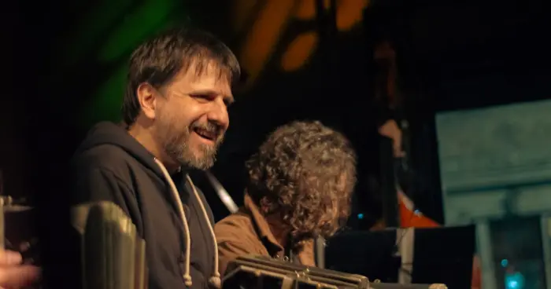
Die Orquesta Invisible ist eine zeitgenössische Orquesta Típica des Tango unter der Leitung des Bandoneonisten und Komponisten Julio Coviello. Sie zeichnet sich dadurch aus, dass die kollektive Komposition im Zentrum ihrer künstlerischen Identität steht – eine im Genre seltene Praxis. 2025 in Buenos Aires aufgrund eines offenen Aufrufs gegründet, versammelt das Orchester Musikerinnen und Musiker unterschiedlicher Generationen und Werdegänge – von Interpreten, die in traditionellen Orchestern ausgebildet wurden, bis zu Mitgliedern der zeitgenössischen und akademischen Szene – und schafft so einen Raum, in dem die Vielfalt der Wege zu einer gemeinsamen Sprache wird. Ausgehend vom klassischen Format der Orquesta Típica schlägt das Projekt eine aktuelle Neudeutung des Tango vor, die die Tiefe der Tradition mit einem lebendigen Schaffensprozess verbindet, in dem die Musik gemeinsam und in ständiger Verwandlung entsteht.
Die Orquesta Invisible entwickelt eine Arbeitsweise, die auf Improvisation, dem Austausch von Ideen und deren anschließender Ausarbeitung in der Partitur beruht. So entsteht ein Repertoire, das verschiedene Autorenschaften in einer gemeinsamen Klangidentität vereint.
Dieser Ansatz bringt eine im Tango ungewöhnliche Dynamik mit sich, der historisch auf die Figur des einzelnen Komponisten ausgerichtet war. Auf der Bühne entfaltet das Orchester ein intensives, dynamisches Programm, das Originalwerke seines Leiters, kollektive Kompositionen und neue gemeinsam verfasste Stücke verbindet – die Stimme gehört dabei als Teil zum Klanguniversum der Gruppe.
Das Ergebnis ist eine sich entwickelnde musikalische Sprache, die in der Tradition der Orquesta Típica verankert bleibt und sich zugleich auf eine zeitgenössische Tangopraxis zubewegt.
Auf ein Mitglied tippen, um die Biografie zu lesen.
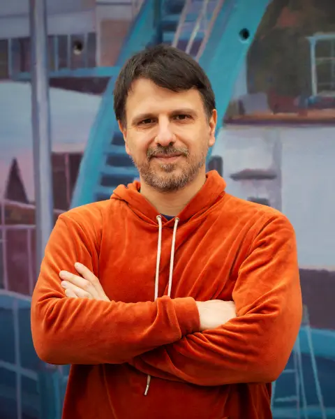
Julio CovielloLeitung und BandoneonJulio Coviello ist Bandoneonist, Komponist und Kulturmanager mit mehr als 25 Jahren Laufbahn im Tango. Er war Mitglied grundlegender Formationen des Genres wie dem Cuarteto Cedrón, der Orquesta Típica Fernández Fierro und Tango Cañón.
Außerdem ist er Gründer von La Tierra Invisible, einem unabhängigen Kulturraum für Livemusik, in dem das Orchester seine regelmäßige Konzertreihe und sein kreatives Labor hat. Parallel dazu unterrichtet er aktiv als Bandoneon-Lehrer an vier der wichtigsten Konservatorien von Buenos Aires und trägt so zur Ausbildung neuer Generationen von Interpreten bei. Seine Laufbahn verbindet Interpretation, Komposition, Lehre und künstlerische Produktion und steht für einen ganzheitlichen Blick auf den zeitgenössischen Tango.
Rodrigo Almonacid ist ein angesehener argentinischer Bandoneonist und Komponist aus Comodoro Rivadavia in der Provinz Chubut. In seiner Heimatstadt spielte er in mehreren Tango-Ensembles. In Buenos Aires war er Mitglied von La Hoguera del Tango, der Orquesta Típica El Afronte und der Orquesta Típica Di Pasquale; heute spielt er in der Orquesta Invisible.
Mariano Burnengo ist ein argentinischer Musiker und Bandoneonist, der in der klassischen und zeitgenössischen Tango-Szene von Buenos Aires ausgebildet wurde. Seine künstlerische Sicht wird durch seinen Weg als Multiinstrumentalist bereichert, der auch Geige und Gitarre spielt.
Er begann seine Ausbildung an der Escuela de Música Popular de Avellaneda (EMPA) und festigte Technik und Stil bei wichtigen Vertretern des Genres; Bandoneon studierte er bei Ramiro Boero, Eva Wolf, Chino Molina und Santiago Arias. Außerdem besuchte er das Spezialisierungsseminar über das Werk Astor Piazzollas an der Universidad Nacional de las Artes (UNA) bei Matías Gobbo, absolvierte zwei Jahre Orchesterpraxis und Arrangement an der Escuela Orlando Goñi sowie privat bei Julián Peralta und bildete sich an der Academia Tango Club bei Rodolfo Roballos und Quena Taborda weiter.
Als Mitglied und Mitbegründer unabhängiger Projekte spielte er im Studierendenorchester Desborde; Anfang 2025 kam er zur Orquesta Invisible.
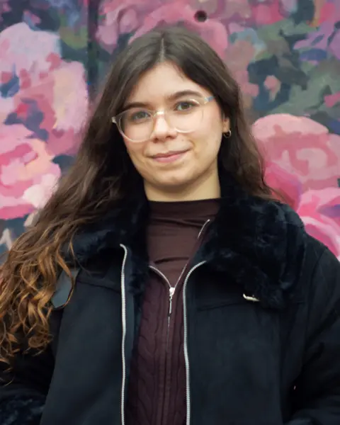
Paula CorrarelloViolinePaula Corrarello ist eine argentinische Geigerin, die sich auf Tango und populäre Musik spezialisiert hat. Ihre Ausbildung und Laufbahn sind mit renommierten Ausbildungsstätten und Orchestern des Genres in Buenos Aires verbunden.
Sie war Mitglied der Orquesta Escuela de Tango „Emilio Balcarce“. Derzeit studiert sie im Studiengang Orchesterakademie am Instituto Superior de Arte des Teatro Colón und schließt ihr Musikstudium (Violine) an der Universidad Nacional de las Artes ab.
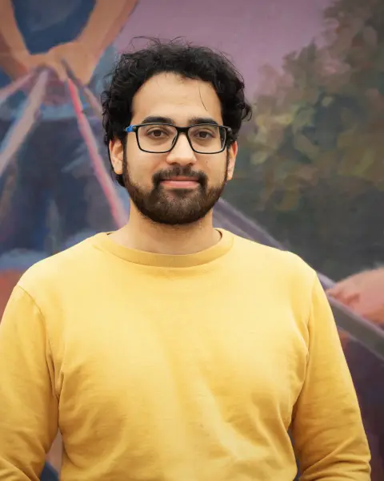
Santiago MooreViolineSantiago Moore ist ein argentinischer Geiger, der in Produktionen klassischer Musik und modernen Tangos mitwirkt.
Er ist festes Mitglied der Orquesta Aeropuertos Argentina unter der Leitung von Néstor Tedesco und der Orquesta Sinfónica Juvenil Nacional „Libertador San Martín“. Im Musiktheater war er Solo-Geiger in der erfolgreichen Disney+-Produktion Cuando Frank conoció a Carlitos.
Er studierte am ISATC und bildet sich an der UNA (Violine) weiter. Zu seinen Lehrern gehören Bruno Giuntini, Oleg Pishenin, Roberto Calomarde, Sergio Polizzi und derzeit Sebastián Prusak.
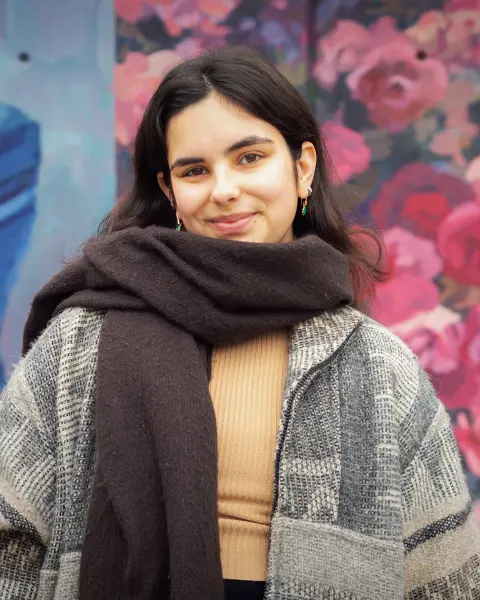
Mabel EtchevarríaViolineMabel Etchevarría ist eine argentinische Geigerin, die sich dem Tango sowie der Orchester- und Kammermusik widmet. Ihre Laufbahn zeichnet sich durch aktive Mitarbeit in unabhängigen Ensembles und in Projekten zur Bewahrung des musikalischen Erbes aus.
Ihre Ausbildung erhielt sie am Conservatorio Schiuma in General San Martín.
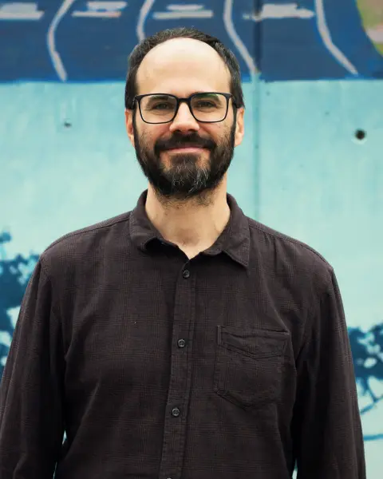
Fernando EstrupViolaFernando Estrup ist ein argentinischer Bratschist und Absolvent des Conservatorio Superior de Música Manuel de Falla, an dem er heute unterrichtet. Sein Profil zeichnet sich durch Vielseitigkeit aus – von klassischer Musik bis zum Tango.
Dolores Velasco ist Cellistin und bewegt sich zwischen klassischer Musik, populärer Musik und Tango. Sie tritt in Kammerkonzerten, Orchesterprojekten und privaten Veranstaltungen in Argentinien und Belgien auf. Sie spielt in der Orquesta Típica Invisible, die sich dem zeitgenössischen und neuen Tango widmet.
Sie studierte an der Universidad Nacional de Lanús (UNLa), erwarb anschließend ihren Bachelor am Koninklijk Conservatorium in Brüssel und 2023 ihren Master am Königlichen Konservatorium Mons. Sie spielte mit der Orquesta Académica des Teatro Colón, der Orquesta Libertador General San Martín und dem Orchester des Internationalen Festivals von Ushuaia in Konzertsälen Argentiniens und Europas.
Sie nahm am Lateinamerikanischen Cellofestival und am Internationalen Musikfestival von Santa Catarina (FEMUSC, Brasilien) teil. Außerdem ist sie in Kammermusik und populärer Musik aktiv, unterrichtet Cello und tritt regelmäßig live auf.
Patricia Szilagyi ist seit 2009 Tango-Pianistin. Sie wirkt als Musikerin in Tango-Shows sowie als Komponistin und Arrangeurin. Von 2017 bis 2025 war sie musikalische Leiterin und Arrangeurin des Tango-Orchesters La Rantifusa mit der Sängerin Natalia Martínez (Stipendium FNA Creación 2021 und Hugo-del-Carril-Preis für die beste Komposition, mit veröffentlichtem Album). Sie spielt in der Orquesta Invisible, zeitgenössischer und neuer Tango, und in TIPAS, einem Trio für traditionellen Milonguero-Tango, mit Europatournee 2026.
2024/2025 war sie Mitglied der Orquesta Escuela Emilio Balcarce unter der Leitung von Maestro Víctor Lavallén. Seit 2013 begleitet sie am ISA Teatro Colón klassischen und zeitgenössischen Tanz, Folklore und Tango am Klavier, und seit 2018 gestaltet sie Klanglandschaften für Bühnenwerke an der Universidad Nacional de las Artes. Sie spielte auch in Gruppen wie dem Quinteto Negro La Boca, mit Konzerten und internationalen Tourneen zwischen 2009 und 2014.
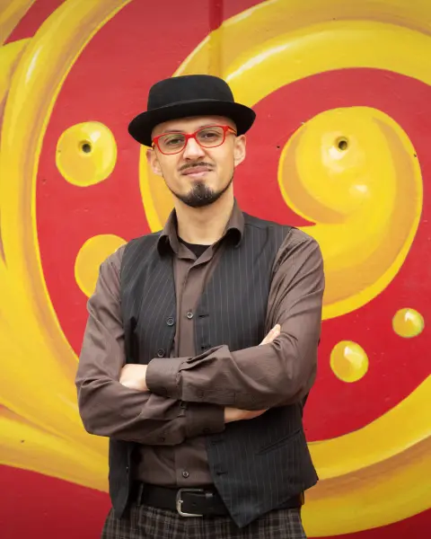
Alex ValdésKontrabassAlex Gallardo Valdés ist ein chilenischer Kontrabassist und Tango-Musiker. Er hat einen Abschluss in Musik mit Schwerpunkt E-Bass (Universidad de Valparaíso, Chile), ist Musiklehrer (Universidad Andrés Bello, Chile) und schließt einen Master in Bildungspolitik und -management an der Universidad Nacional de Luján in Argentinien ab. Er ist auf künstlerische Bildung spezialisiert.
Mit 15 Jahren begann er in der Stadt Quilpué Musik zu machen und spielte seitdem viele Stilrichtungen als E-Bassist in der Region Valparaíso. Zum Tango kam er als Kontrabassist des Quinteto Tanguedia aus Valparaíso (2016–2019). Seit 2019 lebt er in Argentinien und spielte in verschiedenen Tango-Ensembles. Bisher hat er 4 Tango-Alben aufgenommen: 2 mit chilenischen und 2 mit argentinischen Gruppen.
Von 2022 bis 2024 war er Kontrabassist bei Madero Tango Iguazú und 2023 auch auf den Tourneen nach Brasilien und Uruguay dabei. Heute spielt er Kontrabass in mehreren Ensembles in Buenos Aires, etwa im Sexteto Alba, bei Yeta Tango und Té Negro; sein Hauptprojekt ist die Orquesta Invisible.
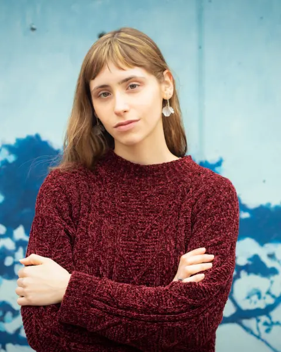
Sofía VernaGesangSofía Verna (Buenos Aires, 2004) ist Sängerin und Pianistin aus der Szene der populären Musik und in Projekten rund um Tango und Folklore aktiv. Sie ist in vielen Formaten aufgetreten, von eigenen Projekten bis zu Kollaborationen mit verschiedenen Ensembles, und hat sich eine breite musikalische und interpretatorische Sprache erarbeitet.
Sie studierte Interpretation mit Schwerpunkt Klavier an der ESEAM Juan Pedro Esnaola und setzte ihre Studien in zeitgenössischer Musik fort, mit Vertiefung in Jazz und Vokalimprovisation.
Zu ihren wichtigsten Projekten gehört Virado, eine Gruppe für lateinamerikanische Musik, mit der sie Argentinien beim Welt-Bolero-Festival in Mexiko vertrat – mit einem Konzept, das Wurzeln und Gegenwart verbindet und viele neue Hörerinnen und Hörer erreicht.
Ihr künstlerischer Weg ist geprägt von ständiger Suche nach Ausdruck und einem flexiblen Umgang mit dem Repertoire. Sofía gehört zu einer neuen Generation von Musikerinnen und Musikern, die die populäre Musik mit einem zeitgemäßen und authentischen Blick neu würdigen.
Porträts: Cari Aimé
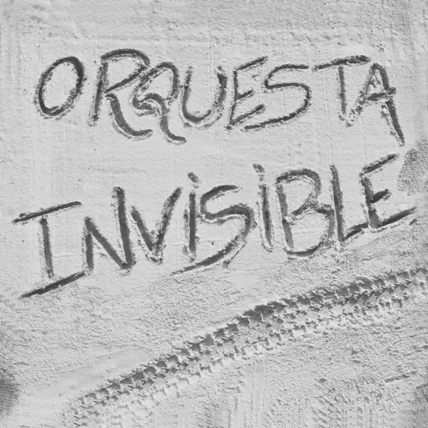
Das erste Album des Orchesters, Huella (2026), fasst seine künstlerische Identität und seine Arbeitsweise zusammen. Das Repertoire vereint Kompositionen von Julio Coviello – entstanden über mehr als zwei Jahrzehnte – mit Werken, die die Gruppe gemeinsam geschaffen hat, darunter neue Tangos und ein Candombe.
Live vorgestellt wurde es am 30. Mai 2026 im Palacio Libertad in Buenos Aires. Auf Spotify und allen Plattformen verfügbar.
„Eine Spur (huella) ist ein Zeichen von Bewegung und entsteht durch viele Menschen, die denselben Weg gehen“, sagt der Leiter.
"Den Tango hält eine intensive Minderheit am Leben – gerade weil wir von seinem Wert überzeugt sind und aus Liebe."

Besprechung des Debütalbums „Huella" auf dem deutschsprachigen Tango-Portal.
ARTIKEL LESEN →Radiointerview über die Live-Präsentation von „Huella".
INTERVIEW ANSEHEN →"Eine Spur ist ein Zeichen von Bewegung und entsteht durch viele Menschen, die denselben Weg gehen."
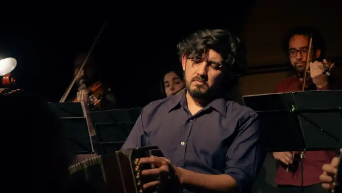
"Eine Spur ist das Zeugnis eines zurückgelegten Weges, eine Bewegung, die alle teilen, die denselben Pfad gehen."
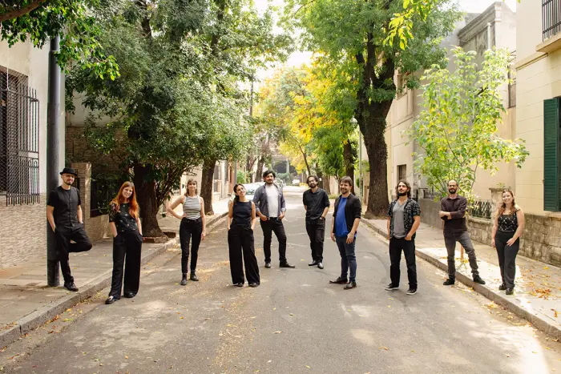
Interview mit Luis Tarantino über die Präsentation von „Huella".
INTERVIEW ANSEHEN →"Das ist nicht strategisch, das machen wir, weil wir es wollen." — Patricia Szilagyi
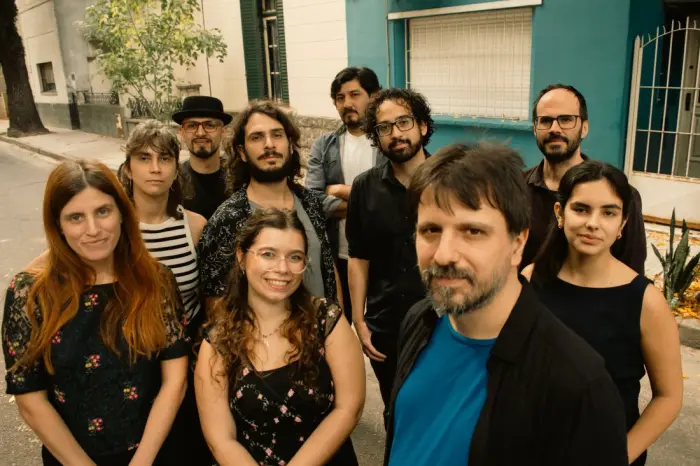
Interview über das Debütalbum und die Gegenwart des Orchesters.
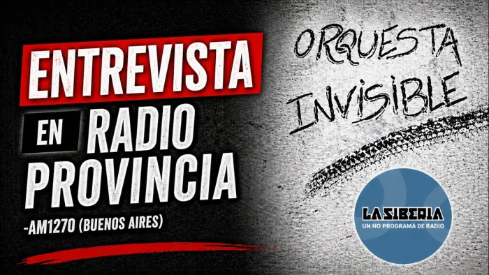
"Die Idee ist, dass das Orchester 'unsichtbar' ist und dass jedes einzelne Mitglied immer sichtbarer wird."
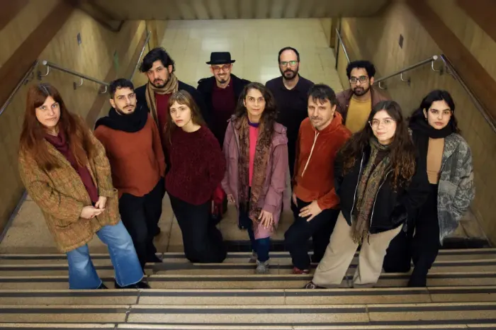
"In diesem Projekt spielen wir mit vollem Einsatz."
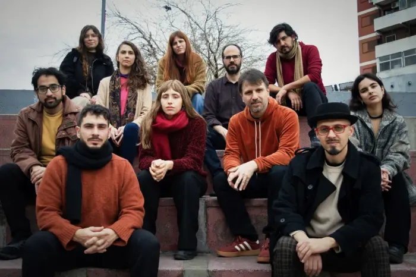
"Ich wollte schon lange ein Orchester gründen."
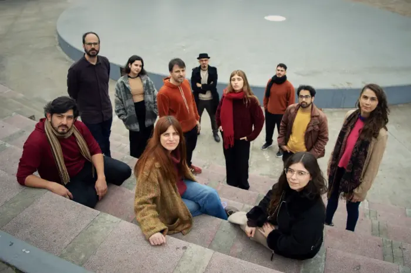
"Man möchte lieber eine Unterströmung sein."
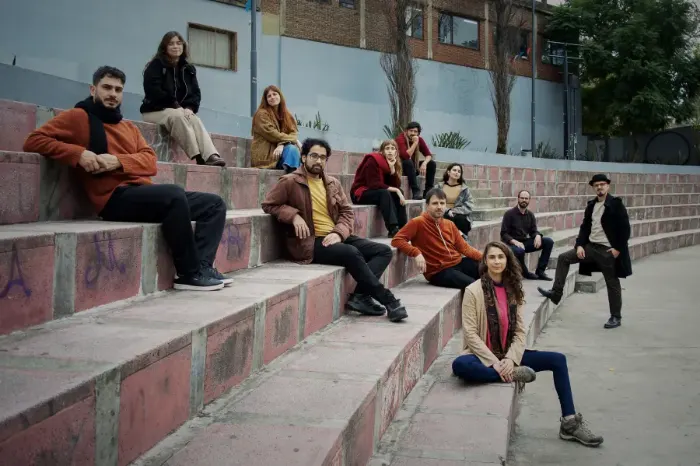
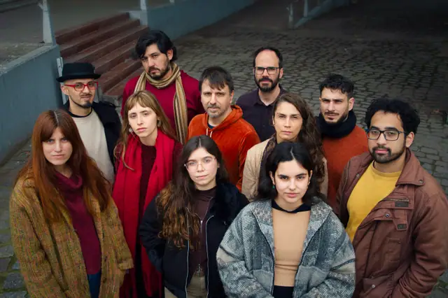
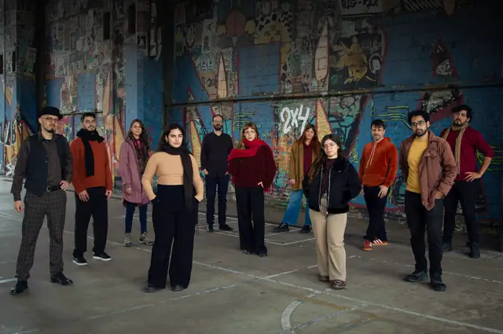
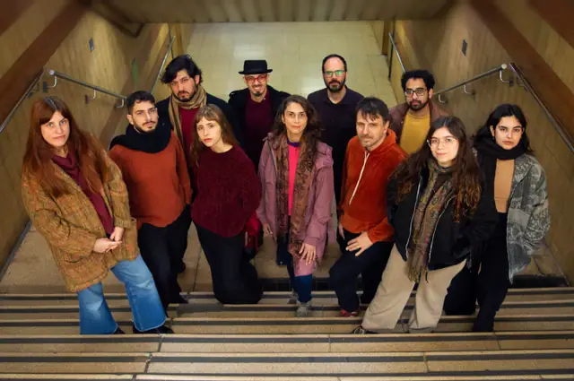
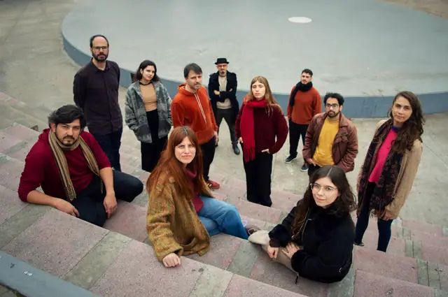
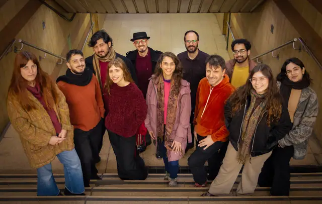
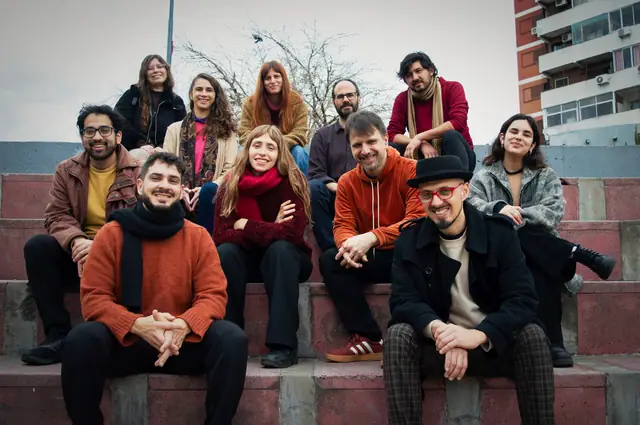
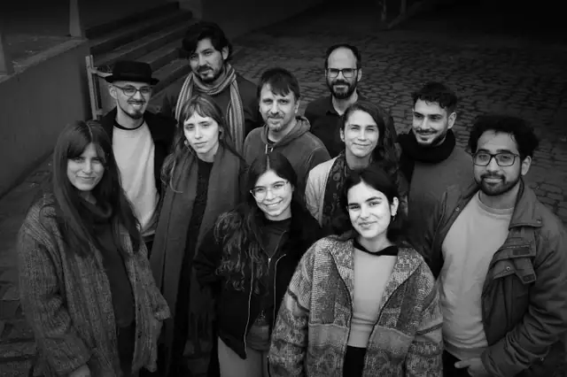
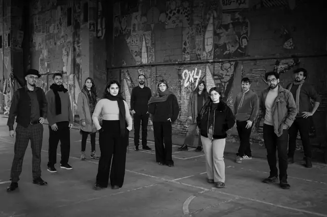
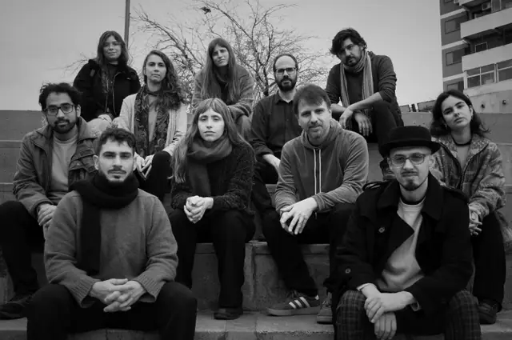
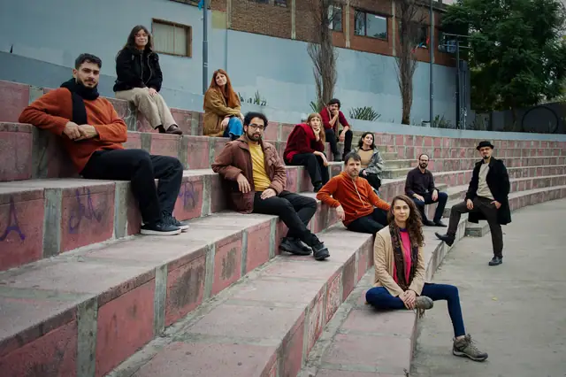
Fotos: Cari Aimé